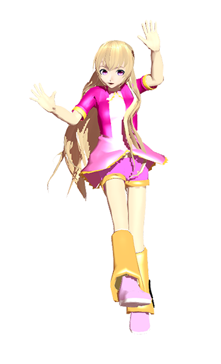

Yokina Magicbeat is the second UTAUloid of PRINTmov UTAU to be the twin of Printto Magicbeat.
Release Date: Unknown (after Printto Magicbeat)
Read more at UTAU Wiki
-
Act 1 Normal CV - First Yokina Magicbeat voice libraly ever (known as Yokina Hopa).
-
Act 2 Glee - Low quality vivid style voice.
-
Act 2 Renew - Designed to be native Act 1 style.
-
Act X - First Yokina Magicbeat VCV voice library. (Last Yokina Magicbeat voice library)